売上と商品、ぜんぶ1つの表に詰め込むと…実は困りごとが起きます。
データを2つのテーブルに分けて、あとで"合体"させる技を覚えましょう🍎
テーブルやカラムの名前は、どんな RDBMS でも使えるように 英語で つけるのがおすすめでした。じつは英語にする以外にも、いくつかの 命名規則（名前をつけるときのルール）があります。まずはここから確認しましょう。
a〜z A〜Z 0〜9 と _ を組み合わせます。全角のひらがなや漢字も使える RDBMS もありますが、使えないものもあるので避けます。日本語のローマ字ではなく 英単語 を使うと読みやすいです。name item_id type1 ／ 悪い例 名前 種類1 namae
customer item_id ／ 悪い例 Customer ItemID
_ で区切ります。item_name item_id ／ 悪い例 itemname 1name
item_id がまさにそれ）。
SELECT INSERT UPDATE などがキーワードです。これらは名前に使いません。
これまでは売上情報を sales テーブル1つにまとめていました。でも「代金」は 売れた個数 × 商品の価格 で決まります。そこで今回は、売上情報と商品情報を別々のテーブルに分けて管理します。
売上は sales テーブル、商品は item テーブル。商品には識別用の ID（item_id） をつけて、この ID で2つのテーブルをつなぎます。
item テーブルに1回だけ書き、sales からは item_id で参照。同じ値を何度も書かずにすみます。実際に作る2つのテーブルは、次のようなデータになります👇
🗂 sales テーブル（売上情報）
item_id で記録します（黄色の列）。🍎 item テーブル（商品情報）
farm）はここに1回だけ。item_id が同じ「6」でも sales の6と結びつきます。新しい sales テーブルを作りたいのですが、今までの sales テーブルがあると名前がぶつかってしまいます。そこで、古いほうを消さずに old_sales という名前に変更 しておきましょう。テーブル名の変更には ALTER文 を使います。
ALTER TABLE テーブル名 RENAME TO 新しいテーブル名;TABLE のあとに今の名前、TO のあとに新しい名前を書きます。
次の SQL文を実行すると、sales テーブルの名前が old_sales に変わります。変えたあと、SELECT 文でちゃんとデータを取り出せるか確認しましょう。
sales の中身を確認できます。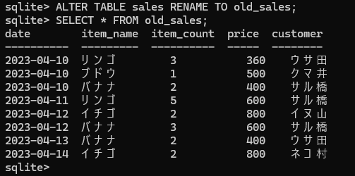
old_sales のデータが取り出せたデータベースにテーブルを作るには CREATE文 を使います。テーブル名のあとの ( ) の中に、カラム名を ,（カンマ） で区切って並べます。それぞれのカラムには データ型 と 制約 を指定できます。
CREATE TABLE テーブル名 (カラム名1 データ型 制約,カラム名2 データ型 制約,…);
第1章で読み込んだ chap1_sales.sql の CREATE文はこうなっていました。
date item_name … が カラム名、TEXT INTEGER が データ型。ここでは制約は書かれていません。制約を書かない場合は「カラム名＋データ型」だけの指定になります。ミスを防ぐには、どんなデータを入れるか・どんな制約をつけるかをきちんと考えることが大切です。
📦 データの種類（データ型）
データベースで扱うデータには「数値」「文字列」などの種類があり、これを データ型 と呼びます。SQLite で使えるのは次の5つです。
TEXT と INTEGER の2つです。売れた個数や価格は数値なので INTEGER 型。商品名やお客さんの名前は文字列なので TEXT 型。日付は数字が入っていますが記号の - を含むので、文字列＝ TEXT 型 です。REAL（小数）と BLOB（画像・音声など）は今回のテーブルでは使いません。
ここで紹介したのは SQLite で使えるデータ型です。データ型は RDBMS によって違うため、ほかの RDBMS を使うときは、その RDBMS で使える型を指定します。たとえば MySQL には、日付を入れるための DATE 型が用意されています。
制約 とは、テーブルに設定する ルール のようなもの。データの整合性（つじつま）や一貫性を保つために使います。制約を設定すると、不正なデータの追加や更新を防げます。この章では2つの制約を使います。
🔑 ① 主キー制約（PRIMARY KEY）
テーブル内の各レコードを 一意に（＝ダブりなく1つに）識別 するためのルールです。主キーに設定したカラムは、値の重複とNULL値が禁止されます。この設定をしたカラムを 主キー と呼びます。
カラム名 データ型 PRIMARY KEY … データ型のあとに PRIMARY KEY と書きます。
新しい item テーブルの item_id は「どの商品か」を判別するために使うので、値がダブらないようにします。たとえば item_id の 7 はもう使われているので、次のデータは入れられません。
🚫 ② NOT NULL 制約
このカラムには NULL値を入れられない というルール。つまり 必ずデータが入っている ことが保証されます。
カラム名 データ型 NOT NULL … データ型のあとに NOT NULL と書きます。
NOT NULL 制約を設定すると、データの入れ忘れを防げます。たとえば price や date を書かずに追加しようとすると、失敗します。
📋 テーブルの構造を整理する
SQL文を書く前に、カラム名・データ型・制約を整理しておくと分かりやすくなります。
sales テーブル（すべてのカラムに NOT NULL 制約）
item テーブル（item_id は主キー、ほかは NOT NULL）
整理した内容をもとに、いよいよ2つのテーブルを作ります。
実行しても何も表示されなければ、作成に成功しています。.tables コマンドでテーブルができているか確認しましょう。
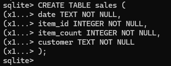
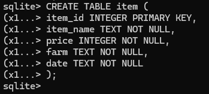
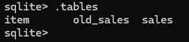
.tables でテーブルができているか確認INSERT 文で、2つのテーブルにデータを入れます。まずは sales テーブルから。
つづいて item テーブルにも入れます。
入ったか SELECT 文で確認します。
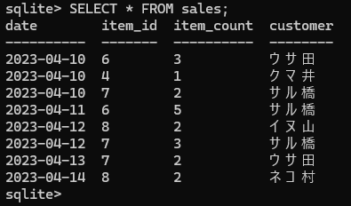
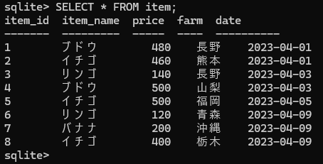
わざと失敗するデータを入れて、制約が働いているか確認します。まずは sales で、customer のデータを抜いてみます（3つしか値がないので、4つ目の customer が NULL になってしまう）。
Runtimeエラー＝実行に失敗したという意味。メッセージは「NOT NULL 制約が失敗しました：sales.customer」＝ customer が NULL になるからエラー。つまり NOT NULL 制約が効いている証拠 です。
つづいて item テーブル。item_id が 7 のデータはもうあるので、同じ 7 を入れてみます。
こちらも Runtimeエラー。「UNIQUE（ユニーク＝一意）制約が失敗した：item_id」＝ 値が重複している のが原因。item_id が 7 のレコードはすでにあるので失敗します。これで 主キー制約も効いている ことが確認できました。
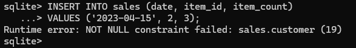
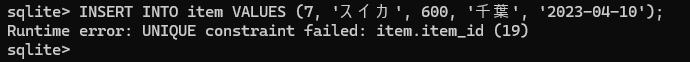
いよいよこの章の主役。テーブルの結合 とは、複数のテーブルを 指定したカラムで関連づけて、1つの表として合体させる ことです。別々の sales と item を結合すれば、売上と商品情報をまとめて取り出せます。
結合のうち、両方のテーブルに一致するデータだけを取り出す方法を 内部結合 といい、INNER JOIN 句を使います（INNER JOIN ＝そのまま「内部結合」）。
SELECT カラム名 FROM テーブル名1INNER JOIN テーブル名2 ON テーブル名1.カラム名 = テーブル名2.カラム名;
INNER JOIN は FROM 句のあとに続けて、合体させたいもう片方のテーブルを指定します。さらに ON のあとに 関連づけるカラム を書きます。2つのテーブルに同じ名前のカラムがあるときは、テーブル名.カラム名 のように . でつなげて書きます。
sales.item_id と item.item_id が同じ行どうしを、横につないで1つの表にします。結合で大切なのは どのカラムで関連づけるか。sales と item は同じ意味を持つ item_id があるので、これを指定します。同じ意味のカラムを指定しないと結合できず、何も表示されないので注意しましょう。
取り出すカラムを選ぶ
結合した表からも、取り出すカラムを個別に選べます。両方のテーブルに同じ名前のカラムがある場合は テーブル名.カラム名、片方にしかないカラムはテーブル名を省略できます。
SELECT * にすると結合した全カラムが出てしまうので、必要なカラムだけを指定します。
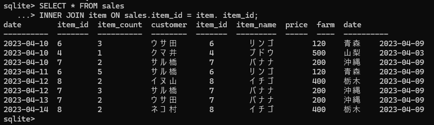
* で全カラムを結合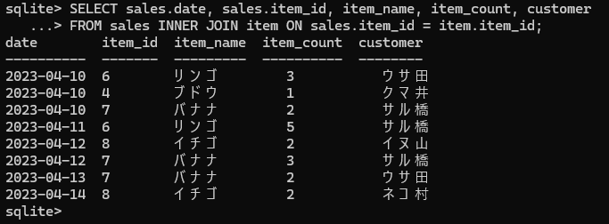
INNER JOIN で結合した表に対しても、これまでの WHERE 句や GROUP BY 句を組み合わせられます。
🔍 INNER JOIN ＋ WHERE 句
条件は 結合した表に対して つけられます。ON 句のあとに続けて WHERE 句を書きます。
SELECT カラム名1, カラム名2, … FROM テーブル名1INNER JOIN テーブル名2 ON テーブル名1.カラム名 = テーブル名2.カラム名WHERE 条件式;
次の SQL文は、結合した表から item_name が「リンゴ」のデータだけを取り出します。
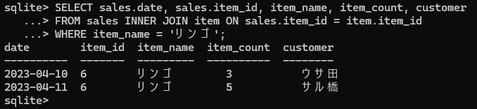
FROM（取り出すテーブル）→ ②INNER JOIN … ON（結合）→ ③WHERE（条件）→ ④SELECT（取り出すカラム）INNER JOIN は、ほかにも GROUP BY・HAVING・ORDER BY とも組み合わせられます。
📊 INNER JOIN ＋ GROUP BY 句
結合した表に対してグループ化もできます。sales.item_id でグループ化し、SUM 関数の引数に item_count を指定して、商品ごとに売れた個数を合計します。
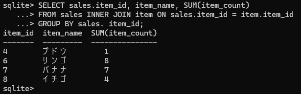
コンピュータ上で行う数値の計算を 算術演算、そこで使う記号を 算術演算子 と呼びます。足し算は紙の計算と同じ + を使います。
次の SQL文は 5 足す 5 の計算をします。テーブルを使わない SELECT 文には FROM 句をつけません。
% は割り算の「余り」を求めます。複数の計算をまとめて行うときは , で区切ります。
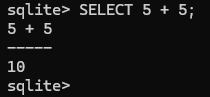
5 + 5 の結果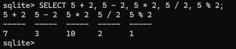
💰 カラムの値を使って計算する
代金を求めるには、sales の item_count（個数）と item の price（価格）を掛け算します。
算術演算子を使った式にも、別名をつける AS キーワードが使えます。
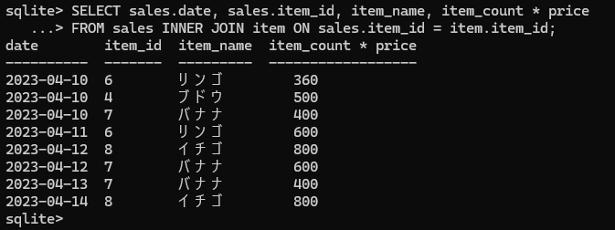
item_count * price で代金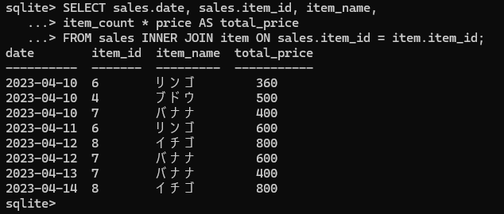
AS total_price で見出しを付与🧮 集計関数の引数に計算式を渡す
関数の引数には、算術演算子を使った式を渡すこともできます。
関数名(カラム名1 算術演算子 カラム名2)
次の SQL文は SUM 関数の引数に item_count * price を渡し、全商品の合計金額を求めます。
逆に、関数の 結果 を使って計算することもできます。
関数名(カラム名1) 算術演算子 カラム名2
次は SUM 関数で item_count を合計し、その結果に price を掛けます。item_id でグループ化し、代金で降順に並べ替えています。
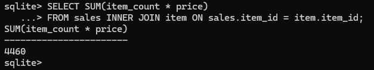
SUM(item_count * price) で総額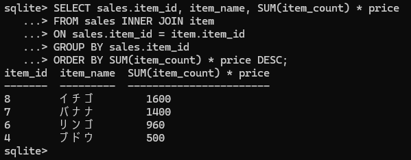
集計関数のほかにも、算術関数や日付関数があります。よく使う ROUND 関数は、数値を四捨五入します。1つ目の引数に四捨五入したい数値、2つ目に表示する小数点以下の桁数を指定します。次の例では 5.678 が四捨五入されて 5.68 になります。
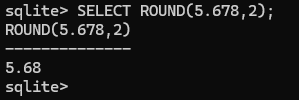
ROUND(5.678, 2) → 5.68最後に、取り出したデータをテキストファイルに出力し、表計算ソフトの Excel で表として表示してみましょう。
Excel で表にするために、まず結果の表示モードを csv形式 に変更します。csv 形式にすると、データが , 区切りで表示されます。
.once コマンドの直後に実行した SQL文の結果を、テキストファイルとして出力できます。書式は .once ファイル名。出力するファイル名は export_sample.csv にします。
.once のあとの SELECT 文は、画面ではなくテキストファイルに書き出されます。sql1nen フォルダに export_sample.csv が作られます。
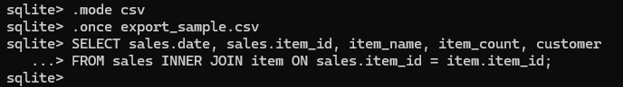
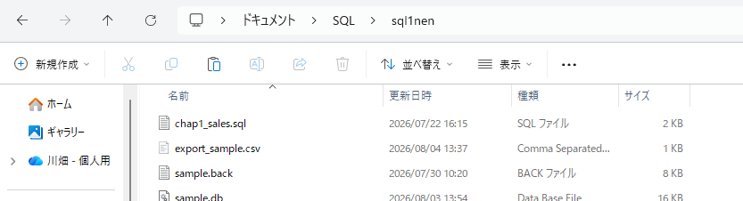
Excel で開く前に、メモ帳などのテキストエディタで中身を確認しましょう。①ファイル名を右クリック → ②［プログラムから開く］→ ③［メモ帳］をクリック。csv 形式では、値は , 区切りで、文字列は " で囲まれます。
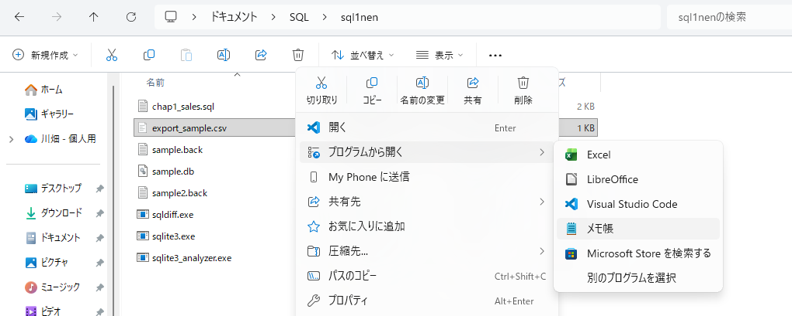
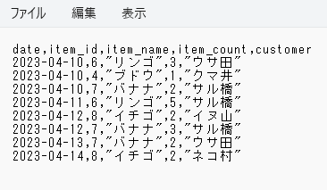
［データ］→［テキストまたはCSVから］
export_sample.csv →［インポート］
コンマ区切り＆表を確認→［読み込む］
表形式で表示された
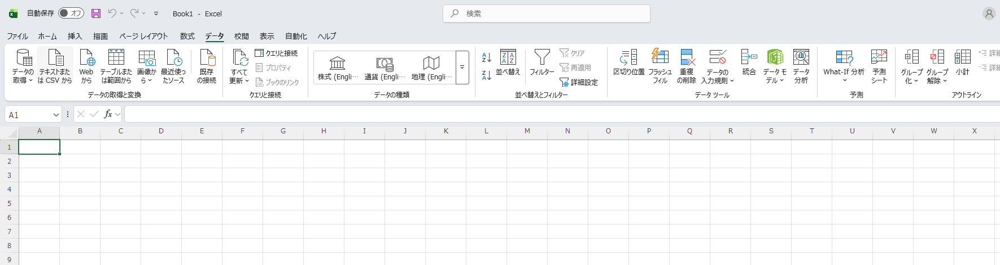
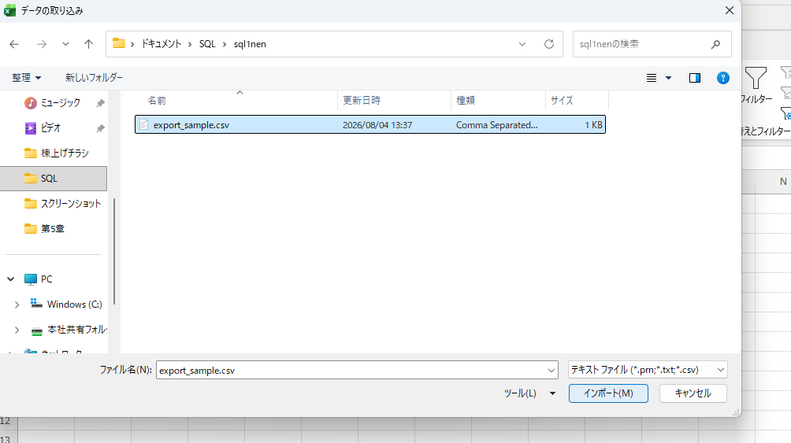
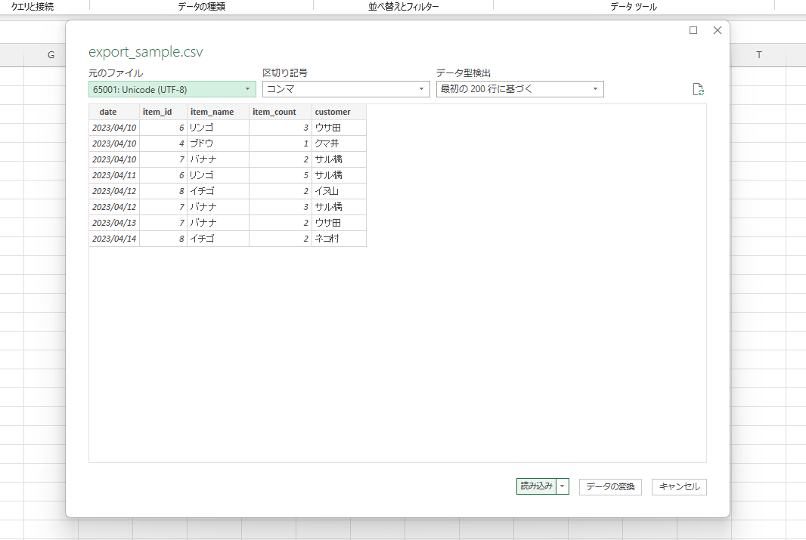
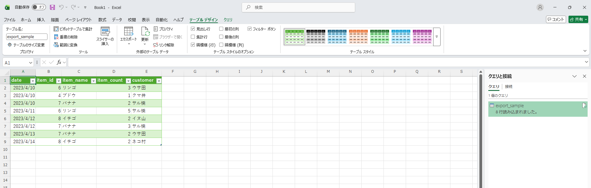
おつかれさまでした🎉 第5章では、データを複数のテーブルに分けて管理し、必要なときに結合して取り出す流れを学びました。大事な言葉を並べておきます。
SELECT 文で取り出す操作は サブクエリ と呼ばれます。次のステップとして覚えると、できることがぐっと広がります。